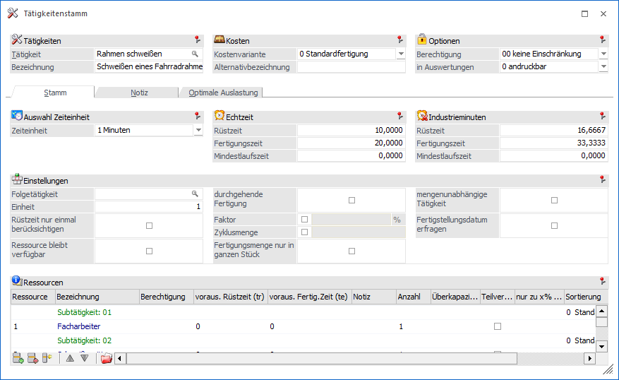
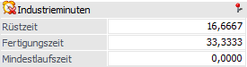
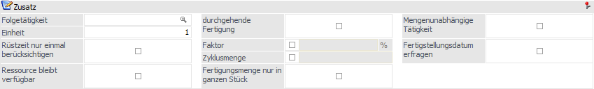
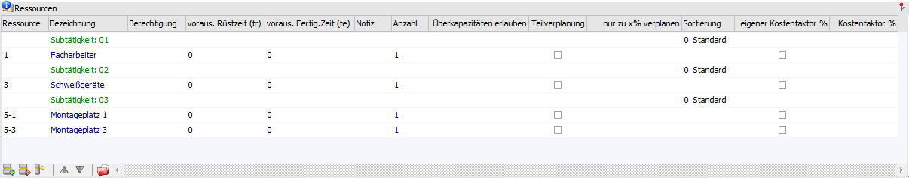
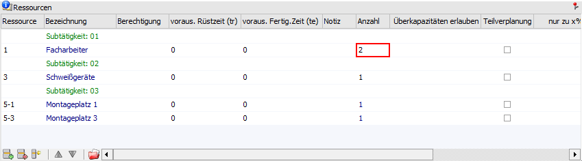
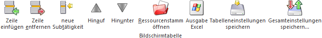
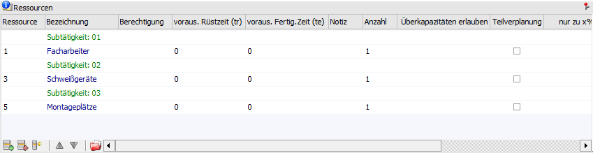
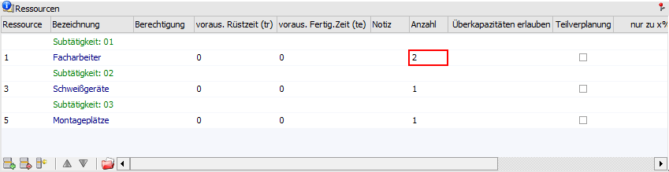
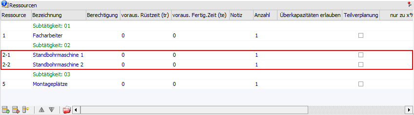
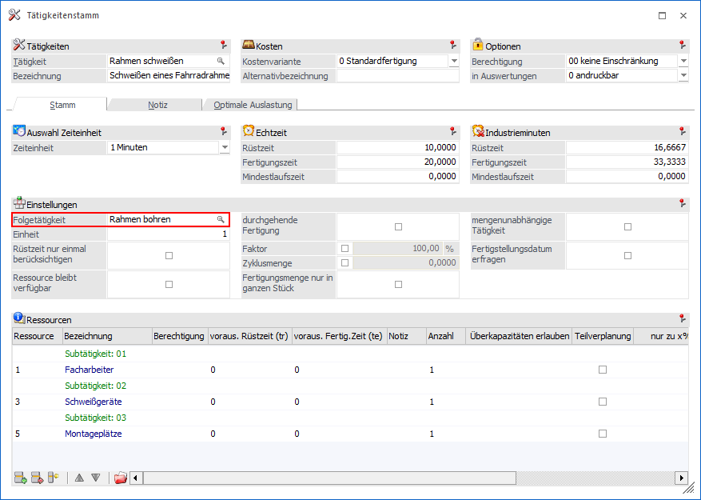

In dem Register "Stamm" können die Haupteinstellungen der Tätigkeit definiert werden.

Folgende Eingabefelder und Information stehen zur Verfügung:
Auswahl Zeiteinheit
Ø Zeiteinheit
An dieser Stelle wird die Zeiteinheit gewählt, welche für die in dieser Tätigkeit erfassten Zeiten (Rüst-, Fertigungs- und Mindestlaufzeit) gilt. Zur Auswahl stehen dabei:
ü 0 - Sekunden
ü 1 - Minuten
ü 2 - Stunden
ü 3 - Tage
ü 4 - Wochen
Hinweis
Bei der späteren Planung beginnt eine Tätigkeit immer nur zu einer vollen Minute bzw. hört zu einer vollen Minute auf.
Echtzeit
Ø Rüstzeit
Angabe der Zeitspanne, welche als Rüstzeit anzusetzen ist. Diese Zeit wird in der weiteren Folge für die Planung genutzt, d.h. die Rüstzeit aus der Tabelle "Ressourcen" kann dieses Feld nur füllen, wir aber bei der Einplanung nicht berücksichtigt. Als Rüstzeit wird jene Zeit bezeichnet, welche zur Vorbereitung der Ausführung einer Tätigkeit benötigt wird.
Hinweis
Wenn in den Applikationsparametern der WinLine PPS die Option "Bei Rüstzeiten die Tätigkeitseinheiten nicht berücksichtigen" (Bereich "Produktionsauftragsanlage") aktiviert ist, dann wird bei der Rüstzeitenermittlung die Hinterlegung in dem Feld "Einheit" nicht berücksichtigt.
Ø Fertigungszeit
Angabe der Zeitspanne, welche als Fertigungszeit benötigt wird. Diese Zeit wird in der weiteren Folge für die Planung genutzt, d.h. die Fertigungszeit aus der Tabelle "Ressourcen" kann dieses Feld nur füllen, wir aber bei der Einplanung nicht berücksichtigt.
Ø Mindestlaufzeit
In diesem Feld wird die Zeit eingegeben, für die diese Tätigkeit mindestens reserviert werden soll.
Beispiel
ü Mindestlaufzeit= 50
Minuten
Fertigungszeit in der Tätigkeit = 30 Minuten.
Es werden damit
für 1 Stück ein "durchgehender" Zeitraum von 50 Minuten reserviert, z.B. 8:00
bis 8:50 Uhr.
ü Mindestlaufzeit= 50
Minuten
Fertigungszeit in der Tätigkeit = 30 Minuten
Fertigungsmenge = 2
Stück
Einplant wird ab 8:10 Uhr, womit eine Fehlzeit für die benötigte
Ressource von 9:00 bis 10:00 Uhr eingetragen ist. Die Produktion für 2 Stück
wird damit von 8:10 bis 9:00 Uhr und dann von 10:00 bis 10:50 Uhr
eingeplant.
Industrieminuten

Ø Rüstzeit / Fertigungszeit / Mindestlaufzeit
Die Rüst-, Fertigungs- und Mindestlaufzeit können sowohl in normalen Minuten als auch in Industrieminuten eingegeben werden. Die Werte werden sofort nach der Eingabe umgerechnet und eingetragen.
Beispiel
ü Eingabe von 30 Industrieminuten = 18 Minuten
ü Eingabe von 100 Industrieminuten (1 Industriestunde) = 60 Minuten (1 Stunde)
Zusatz

Ø Folgetätigkeit
Soll eine Tätigkeit automatisch eine andere Tätigkeit nach sich ziehen, kann diese Tätigkeit hier eingegeben werden.
Hinweis
Über diesen Weg kann auch die Reihenfolge der Tätigkeiten innerhalb einer Ebene bestimmt werden, da die Folgetätigkeit erst nach Fertigstellung der Ursprungstätigkeit beginnt.
Ø Einheit
Mit der Einheit wird bestimmt, für wie viel Stück die Fertigungszeit gilt.
Ø Rüstzeit nur einmal berücksichtigen
Bei Aktivierung dieser Checkbox wird die Rüstzeit nur einmal berücksichtigt, d.h. wenn die Reservierung z.B. 2 Stunden benötigt und dazwischen liegt die Mittagspause, wird die Rüstzeit nur einmal berechnet und nicht nach der Mittagspause ein zweites Mal.
Ø Ressource bleibt verfügbar
Wird mit dieser Tätigkeit eine Reservierung durchgeführt, bleiben die hinterlegten Ressourcen trotzdem verfügbar und können zusätzlich für andere Projekte herangezogen werden.
Ø durchgehende Fertigung
Diese Checkbox hat nur für die erste Ressource der "Subtätigkeit: 01" eine Auswirkung. Nur wenn diese Ressource durchgehend eingeplant werden kann wird eine entsprechende Reservierung vorgenommen. Sollte die Einplanung z.B. durch eine Fehlzeit unterbrochen werden, dann wird die komplette Einplanung nach hinten geschoben.
Beispiel
Als erste Ressource ist bei der Tätigkeit "Bleche stanzen" unter "Subtätigkeit: 01" die "Stanzmaschine 1" hinterlegt. Diese Ressource hat ein Schema mit der Zeit von 06:00Uhr bis 20:00Uhr hinterlegt. Über die Fehlzeiten bzw. die Wartung wurde hinterlegt, dass die Ressource "Stanzmaschine 1" am 18.05.2021 von 10:00Uhr bis 12:00Uhr gewartet werden soll.
Nun wird für den 18.05.2021 ein Produktionsauftrag erfasst, welcher die Tätigkeit "Bleche stanzen" beinhaltet und dafür würden 5 Stunden benötigt werden.
Ohne "Durchgehende Fertigung" würde die "Stanzmaschine 1" von 06:00Uhr bis 10:00Uhr und von 12:00Uhr bis 13:00Uhr reserviert werden.
Mit "Durchgehende Fertigung" würde die "Stanzmaschine 1" von 12:00Uhr bis 17:00Uhr reserviert werden, da die Reservierung sonst durch die Wartung unterbrochen werden würde.
Hinweis
Als nächster Schritt können auch mehrere Tätigkeiten innerhalb einer Stückliste miteinander fürs Einplanen verbunden werden, sodass keine anderen Tätigkeiten (z.B. aus anderen Produktionsaufträgen) dazwischen eingeplant werden können (nähere Informationen entnehmen Sie bitte dem Kapitel Stückliste, Option "durchgehende Tätigkeit"). D.h. bei Verwendung dieser Funktionen ist die WinLine PPS dazu angehalten einen Zeitraum zu finden, in welchem eine gesamte Tätigkeit bzw. Tätigkeiten in einer Stückliste zusammen "lückenlos" eingeplant werden können.
Achtung
In der Praxis schließt sich die gleichzeitige Verwendung der Optionen "durchgehende Fertigung" und "Fertigungsmenge nur in ganzen Stück" aus.
Dieses liegt daran, dass die Option "durchgehende Fertigung" die WinLine PPS zwingt alle verfügbaren Ressourcenzeiten ohne Zeitunterbrechungen zu reservieren, aber die Option "Fertigungsmenge nur in ganzen Stück" verursacht genau das Gegenteil, indem innerhalb einer bestimmten Zeitspanne (1 Tag, die Morgenschicht, usw.) nur ganze Stücke produziert werden dürfen, was zu Unterbrechungen bei der Einplanung einer Tätigkeit führen kann.
Beispiel
Eine Tätigkeit soll für eine Ressource, welche 2 Stunden von 7:00 bis 9:00Uhr zur Verfügung steht, eingeplant werden. Mit "durchgehende Fertigung" müssen die ganzen 2 Stunden eingeplant werden. Wenn laut der Fertigungszeit aber nur 1,5 Stück in den 2 Stunden produziert werden können, würde durch die Anwendung der Option "Fertigungsmenge nur in ganzen Stück" nur 1 Stunde und 30 Minuten zwischen 7 und 9 Uhr eingeplant werden. Dies steht allerdings im direkten Gegensatz zur Option "Durchgehende Fertigung"!
Ø Faktor
An dieser Stelle kann die Hinterlegung eines Faktors in Prozent erfolgen, welcher bei der Reservierung berücksichtigt wird. Dieser Faktor übersteuert dabei jenen aus dem Ressourcenstamm (nähere Informationen siehe Kapitel Ressourcenstamm).
Beispiel
Die Ressource Hans Huber hat einen Faktor von 75%. Bei der Tätigkeit "Maschinenkontrolle" muss allerdings nur darauf geachtet werden, dass die Maschine ordnungsgemäß läuft (der Facharbeiter steht nur bei der Maschine). D.h. auch die Ressource Hans Huber kann hier 100% leisten. Daher wird in diesem Fall bei der Tätigkeit 100% eingetragen und bei der Reservierung werden auch die 100% angenommen.
Ø Zyklusmenge
Ist diese Checkbox aktiviert und ein Wert hinterlegt, gelten die angegebenen Zeiten in Folge für einen Fertigungsvorgang. Somit hat ein Produktionszyklus pro Mengeneinheit immer eine gewisse Mindestlaufzeit, auch wenn nur ein Teil der vorgegebenen Zyklusmenge produziert wird.
Beispiel
ü Rüstzeit: 60 min.
ü Fertigungszeit: 1 min.
ü Zyklusmenge aktiviert: 185kg
In diesem Fertigungsvorgang (61 min.) können max. 185kg produziert werden.
Hinweis - Unterschreiten der Zyklusmenge
Wird die Fertigungsmenge unterschritten, so ändert dies nichts an der vorgegebenen Zeit. Der Fertigungsvorgang dauert immer exakt die angegebene Zeit.
ü Rüstzeit: 60 min.
ü Fertigungszeit: 1 min.
ü Zyklusmenge aktiviert: 185kg
Werden nur 160kg produziert, so dauert der Fertigungsvorgang ebenfalls 61 min.
Hinweis - Überschreitung der Zyklusmenge
Bei Überschreitung der vorgegebenen Menge wird der Zyklus (mit der "Fertigungsmenge") solange wiederholt, bis die benötigte Menge produziert worden ist.
ü Rüstzeit: 60 min.
ü Fertigungszeit: 1 min.
ü Zyklusmenge aktiviert: 185kg
Werden 250kg produziert, so dauert der Fertigungsvorgang 62 min.
Ø Fertigungsmenge nur in ganzen Stück
Bei der Reservierung wird kontrolliert, ob in der zu fertigenden Zeit nur "ganze" Stück herausfallen.
Beispiel
ü Produktion von 10 Fahrrädern - 1 Fahrrad benötigt 1 Stunde
ü Facharbeiter ist 8,5 Stunden pro Tag verfügbar
Ist die Checkbox aktiviert, so werden am 1. Tag 8 Fahrräder produziert und am 2. Tag die restlichen 2. Sollte die Option hingegen nicht aktiviert worden sein, so werden am 1. Tag 8,5 Fahrräder und am 2. Tag 1,5 Fahrräder produziert.
Ø mengenunabhängige Tätigkeit
Über diese Option wird gesteuert, dass eine Tätigkeit nur ein einziges Mal und unabhängig von der zu produzierenden Menge durchgeführt wird. Es wird somit die Stückzahl aus der Stückliste ignoriert.
Beispiel
Zur Erzeugung eines Ventils wird die Tätigkeit "Justieren einer Maschine" benötigt. Diese Justierung dauert 10 Minuten.
Egal wie viele Stück lt. Stückliste nun produziert werden, das Justieren ist eine einmalige Tätigkeit und dauert immer nur 10 Minuten!
Achtung
Im Standard wird bei Aktivierung dieser Option die zu produzierende Menge und die Menge aus dem Stücklistenstamm ignoriert. Sollte die Menge aus dem Stücklistenstamm hingegen relevant sein, so kann in den PPS-Parametern (Bereich "Parameter") die Option "mengenunabhängige Tätigkeiten mit Stückliste multiplizieren" aktiviert werden. D.h. die Zeit der Tätigkeit würde dann weiterhin mit der Menge aus der Stückliste multipliziert werden. Die Produktionsmenge ist weiterhin irrelevant.
Ø Fertigstellungsdatum erfragen
Mit Hilfe dieser Option wird, nachdem eine Tätigkeit erfolgreich eingeplant wurde, automatisch der Info-Ansichtsbereich beim "Tätigkeiten einplanen" geöffnet. Dort ist in der Folge ersichtlich, an welchem Datum die Produktion startet bzw. an welchem Datum die Produktion abgeschlossen ist. Je nachdem, ob man eine Startproduktion oder eine Zielproduktion durchführt, kann anschließend das eine oder andere Datum geändert werden bzw. um "x Tage" (+ bzw. - Anzahl von Tagen) verschoben werden. Im Anschluss geht es mit dem Einplanen wie gewohnt weiter.
Tabelle "Ressourcen"

In der Tabelle werden die Ressourcen hinterlegt, welche für die Tätigkeit benötigt werden. Hierbei ist zu beachten, dass die einzelnen Subtätigkeiten zwingend gemeinsam genötigt werden (UND-Verknüpfung), innerhalb einer Subtätigkeit allerdings die eine oder andere Ressourcen genommen werden kann (ODER-Verknüpfung).
Ø Ressource
An dieser Stelle wird die Nummer der benötigten Ressource bzw. Ressourcengruppe hinterlegt.
Hinweis
Wenn eine Ressourcengruppe hinterlegt wird, so bedeutet dieses, dass irgendeine Ressource der Gruppe die Arbeit bewältigen kann. Während der Produktionseinplanung wird dann eine freie Ressource aus den hinterlegten Gruppen herausgesucht und dem Produktionsauftrag zugeordnet (außer es wird mit der Kapazitätsplanung gearbeitet). Wie nach einer freien Ressource gesucht werden soll, kann mit Hilfe der Spalte "Sortierung" beeinflusst werden.
Ø Bezeichnung
Informationsfeld, in dem die Bezeichnung der gewählten Ressource bzw. -gruppe angezeigt wird.
Ø Berechtigung
Gibt an welche Berechtigungsstufe notwendig ist, um diese Ressource zu verwenden. D.h. enthält der Produktionsauftrag Ressourcen mit einem höheren Berechtigungslevel als der Bearbeiter aufweist, dann kann dieser den Auftrag nicht abrufen. Damit wird sichergestellt, dass Ressourcen die besonders knapp oder besonders teuer sind, nicht von jedem Mitarbeiter in Anspruch genommen werden können.
Ø voraus. Rüstzeit (tr)
Eingabe der voraussichtlichen Rüstzeit für die Ressource bzw. die Ressourcengruppe, wobei diese Zeit die Rüstzeit in der Tätigkeit nicht überschreiten sollte. Falls es doch passiert, dann wird angeboten diese Zeit in die Tätigkeit zu kopieren, d.h. die Dauer der Tätigkeit ergibt sich automatisch "nur" aus der Dauer der zeitaufwendigsten Ressource.
Die hier angegebene Zeit wird in der weiteren Folge nicht für die Planung genutzt, d.h. nur die Rüstzeit aus der Tätigkeit wird bei der Einplanung berücksichtigt.
Ø voraus. Fertig. Zeit (te)
Eingabe der voraussichtlichen Fertigungszeit für die Ressource bzw. die Ressourcengruppe, wobei diese Zeit die Fertigungszeit in der Tätigkeit nicht überschreiten sollte. Falls es doch passiert, dann wird angeboten diese Zeit in die Tätigkeit zu kopieren, d.h. die Dauer der Tätigkeit ergibt sich automatisch "nur" aus der Dauer der zeitaufwendigsten Ressource.
Die hier angegebene Zeit wird in der weiteren Folge nicht für die Planung genutzt, d.h. nur die Fertigungszeit aus der Tätigkeit wird bei der Einplanung berücksichtigt.
Ø Notiz
Eingabe einer zusätzlichen Notiz pro Ressourcenzeile.
Ø Anzahl
Gibt an, wie viele Elemente einer Ressourcengruppe benötigt werden. Werden einzelne Ressourcen erfasst ist die Anzahl mit 1 vorbesetzt und kann nicht geändert werden, da eine individuelle Ressource nur einmal vorkommen kann.
Beispiel
Es gibt 5 Facharbeiter, die alle die gleiche Fähigkeit besitzen. Es werden 2 Facharbeiter benötigt. Die Anzahl der Ressourcen aus der Ressourcengruppe "Facharbeiter" ist 2.

Ø Überkapazitäten erlauben
Ab der Subtätigkeit 2 kann die Checkbox "Überkapazitäten erlauben" aktiviert werden. Hierfür muss eine Ressourcengruppe eingetragen werden, bei der "nur Kapazitätsplanung" eingestellt ist. Beim Einplanen wird diese Ressourcengruppe immer eingeplant, es wird nicht geprüft ob genügend Ressourcen zur Verfügung stehen, dadurch kann es zu Überkapazitäten kommen.
Beispiel
Es soll eine Maschine und zusätzlich dazu soll auch irgendein Lagerarbeiter eingeplant werden. Die Maschinen sind das Entscheidende in der Firma und die Lagerarbeiter können ggf. zugekauft werden. Daher werden die Lagerarbeiter mit "Überkapazitäten erlauben" gekennzeichnet. Die Maschine wird eingeplant und egal ob am entsprechenden Tag ein Lagerarbeiter verfügbar ist oder nicht, es wird auf jeden Fall auch ein Lagerarbeiter dazu eingeplant. Somit kann bei den Lagerarbeitern auch eine Auslastung von über 100% erreicht werden.
Ø Teilverplanung
Mit dieser Checkbox kann eine Ressource als "Teilverplanbar" definiert werden inklusiv den Prozentsatz zu dem die Ressource teilverplanbar ist (Spalte "nur zu % verplanen").
Ø nur zu % verplanen
An dieser Stelle kann der Prozentsatz, zu welchem die Ressource teilverplant wird, hinterlegt werden.
Beispiel
Eine Ressource ist teilverplanbar zu 50%. Sie ist dann für eine andere Tätigkeit zur gleichen Zeit zu 50% verfügbar. D.h. beim Einplanen von zwei Produktionsaufträgen am gleichen Datum kann beispielsweise dann die Ressource für zwei verschiedene Tätigkeiten in zwei verschiedenen Aufträgen gleichzeitig verplant werden.
Hinweis
Im Arbeitsschein werden "mehrfach verwendete" Ressourcen (d.h. für mehr als eine Tätigkeit gleichzeitig verplant) mit einem grünen Haken gekennzeichnet. Des Weiteren hat eine Teilverplanung keine Auswirkung auf die Kosten oder IST-Zeiten der Ressource!
Ø Sortierung
An dieser Stelle kann die Sortierungsmethode beim Einplanen der Subtätigkeit ausgewählt werden. Zur Auswahl stehen dabei:
ü 0 - Standard
Mit dieser Auswahl
wird die Subtätigkeit in der Reihenfolge eingeplant genau wie die Zeilen in der
Subtätigkeit angeordnet sind (bzw. bei einer Ressourcengruppe die Einstellung
der Ressourcengruppe)
ü 1 - Nach Ressourcennummer
Mit
dieser Auswahl wird die Subtätigkeit in der Reihenfolge eingeplant genau nach
der Ressourcennummer der Ressourcen, die in der Subtätigkeit hinterlegt
sind.
ü 2 - Nach Kosten
(aufsteigend)
Mit dieser Auswahl wird die Subtätigkeit in der Reihenfolge
eingeplant genau nach den hinterlegten Kosten der Ressourcen, die in der
Subtätigkeit hinterlegt sind.
ü 3 - Nach Verfügbarkeit
Mit
dieser Auswahl wird die Subtätigkeit in der Reihenfolge eingeplant genau nach
der Verfügbarkeit der Ressourcen, die in der Subtätigkeit hinterlegt sind.
Tabellenbuttons

Ø Zeile einfügen
Durch Anklicken dieses Buttons kann oberhalb der aktiven Ressource eine weitere Ressource eingefügt werden.
Ø Zeile entfernen
Durch Anklicken dieses Buttons wird die aktive Ressource entfernt.
Ø neue Subtätigkeit
Durch Anklicken dieses Buttons wird eine neue Subtätigkeit eröffnet.
Hinweis
Werden mehrerer Ressourcen innerhalb einer Subtätigkeit erfasst bedeutet dieses, dass eine dieser Ressourcen verwendet werden soll.
Werden mehrere Ressourcen für die Tätigkeit benötigt, dann müssen die Ressourcen in jeweils voneinander getrennten Subtätigkeiten erfassten werden.
Beispiel 1
Für die Tätigkeit werden ein Facharbeiter, ein Schweißgerät und ein Montageplatz benötigt. Welche individuellen Ressourcen genutzt werden ist dabei irrelevant, d.h. es werden in diesem Beispiel ausschließlich mit Ressourcengruppen gearbeitet.

Beispiel 2
Es werden keine spezifischen Ressourcen benötigt und es kann wie im o.a. Beispiel mit Ressourcengruppen gearbeitet werden. Allerdings werden nun 2 Facharbeiter benötigt, welche individuellen Ressourcen zum Einsatz kommen, wird das Programm zum Zeitpunkt der Reservierung entscheiden.

Beispiel 3
Für die Tätigkeit werden ein Facharbeiter und ein Montageplatz benötigt die individuellen Ressourcen sind irrelevant, daher kann mit Ressourcengruppen gearbeitet werden. Zum Bohren wird entweder die Standbohrmaschine 1 oder 2 benötigt. Der Akkubohrer, der in der Gruppe "Bohrmaschinen" ebenfalls enthalten ist, ist nicht geeignet. Darum wird nicht mit der Gruppe, sondern mit einzelnen Ressourcen gearbeitet.

Beispiel 4
Es werden zunächst gleichzeitig Facharbeiter, Schweißgerät und Montageplatz benötigt, um den Rahmen zu schweißen. Daran anschließend werden gleichzeitig Facharbeiter, Bohrmaschine und Montageplatz benötigt um am Rahmen Bohrungen anzubringen. Das Aufeinanderfolgen von Tätigkeiten wird mit der "Folgetätigkeit" definiert.

Ø Zeile hinauf / Zeile hinunter
Mit Hilfe dieser Buttons kann die aktive Zeile verschoben werden. Hierbei ist zu beachten, dass Ressourcenzeilen immer innerhalb der Subtätigkeit bleiben, aber auch komplette Subtätigkeiten in Gänze verschoben werden können.
Ø Ressourcenstamm öffnen
Durch Anwahl dieses Buttons wird der Ressourcenstamm der markierten Ressource geöffnet.
Ø Ausgabe Excel
Durch Anwahl des Buttons "Ausgabe Excel" wird der Inhalt der Tabelle an Microsoft Excel übergeben.
Ø Tabelleneinstellungen speichern
Die Spalten einer Tabelle können grundsätzlich an beliebige Positionen verschoben, bzw. in der Breite entsprechend angepasst werden. Durch Anwahl des Buttons "Tabelleneinstellungen speichern" werden die Einstellungen benutzerspezifisch gespeichert und bei dem nächsten Aufruf des Programmpunktes wieder vorgeschlagen.
Ø Gesamteinstellungen speichern…
Im Gegensatz zu "Tabelleneinstellungen speichern" können mit "Gesamteinstellungen speichern" mehrere Tabellenaufbauten gespeichert und nach Wunsch geladen werden. Zusätzlich werden Sonderfunktionen der Tabelle (z.B. "Spalte gruppieren") ebenfalls bei der Speicherung bedacht.